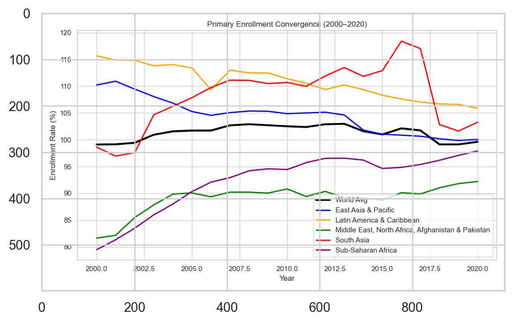
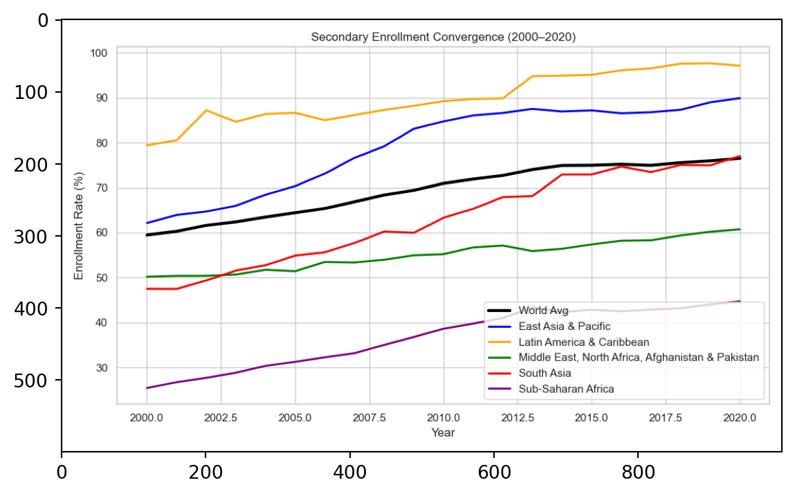
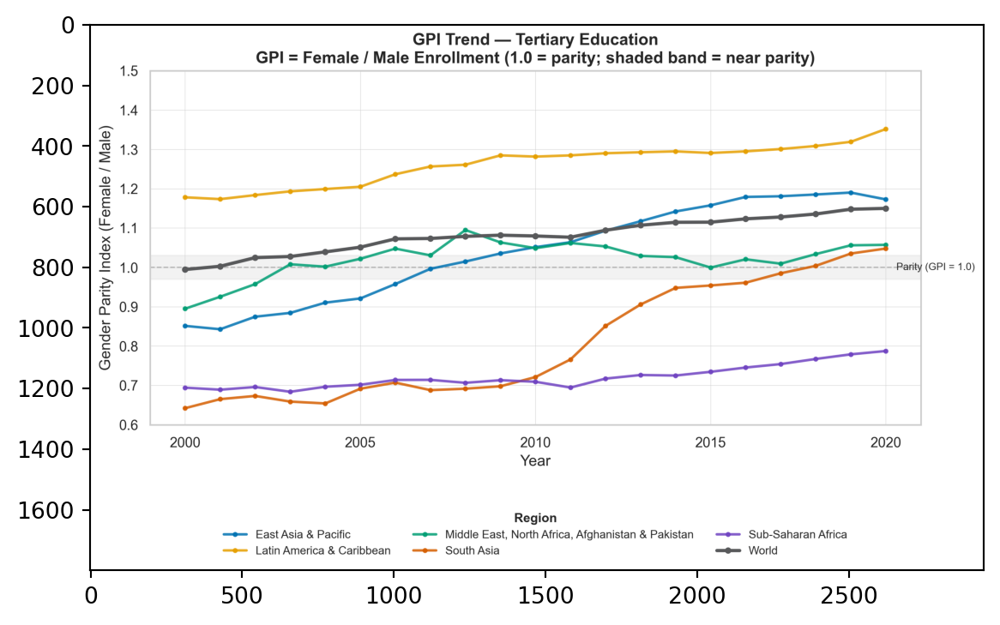
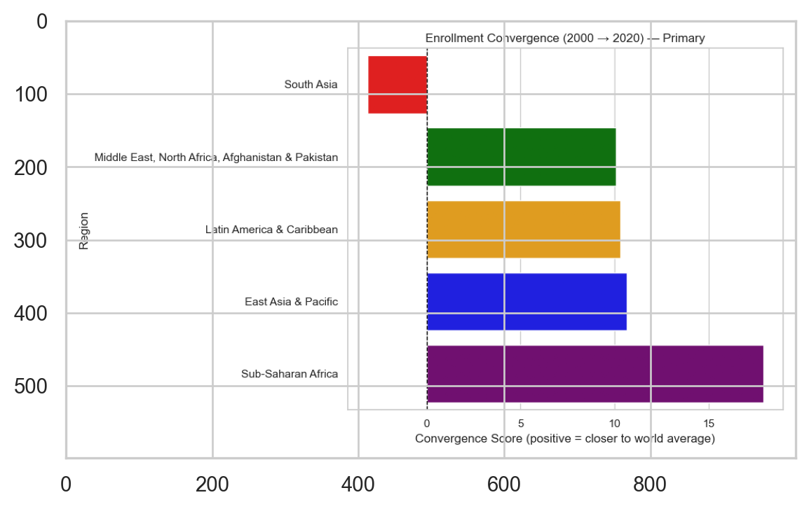
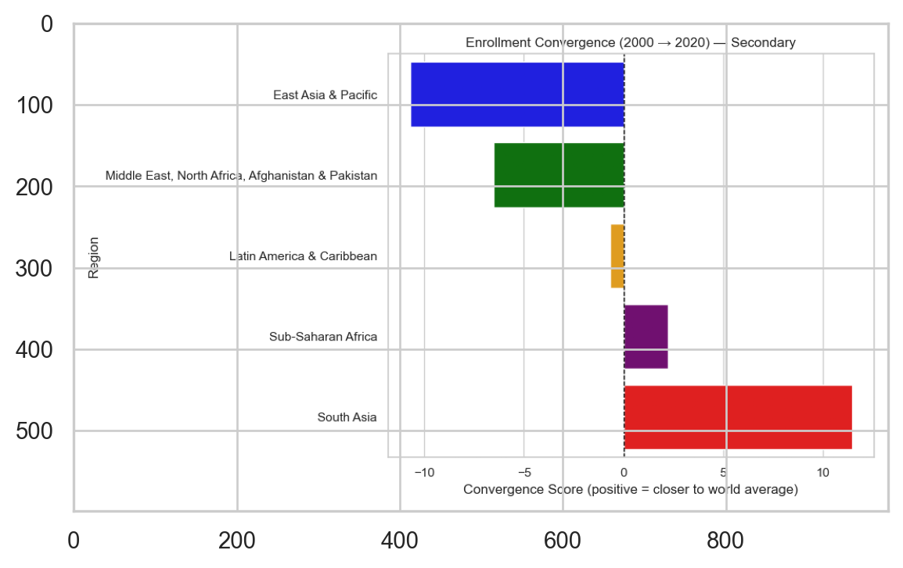
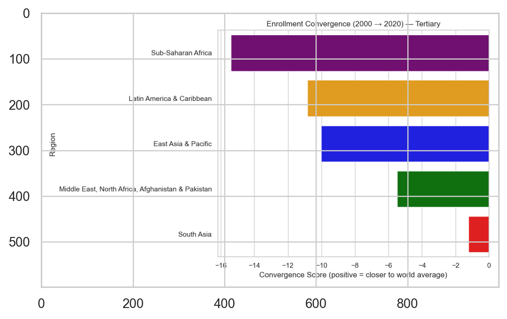
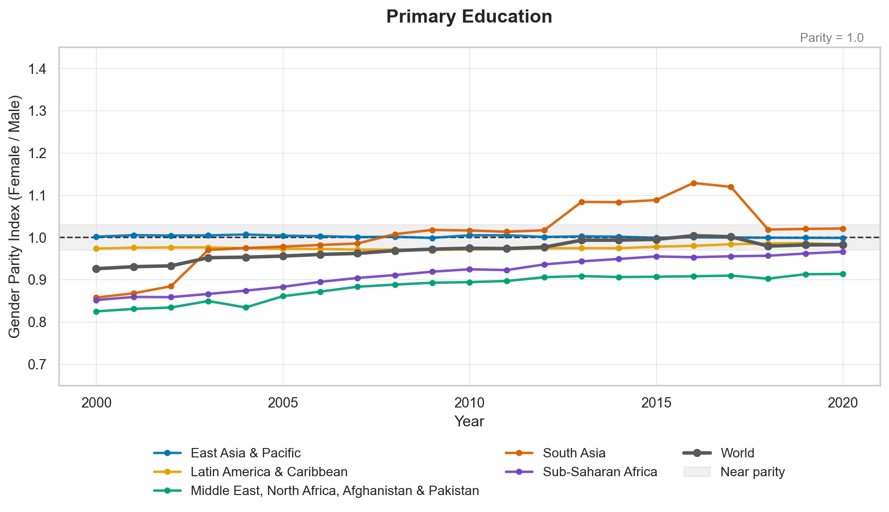
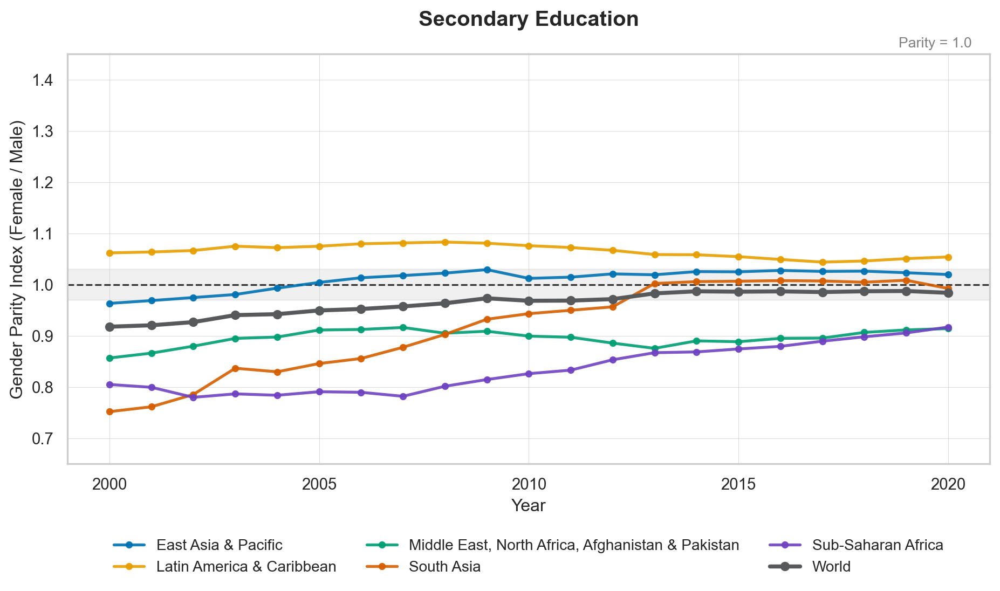
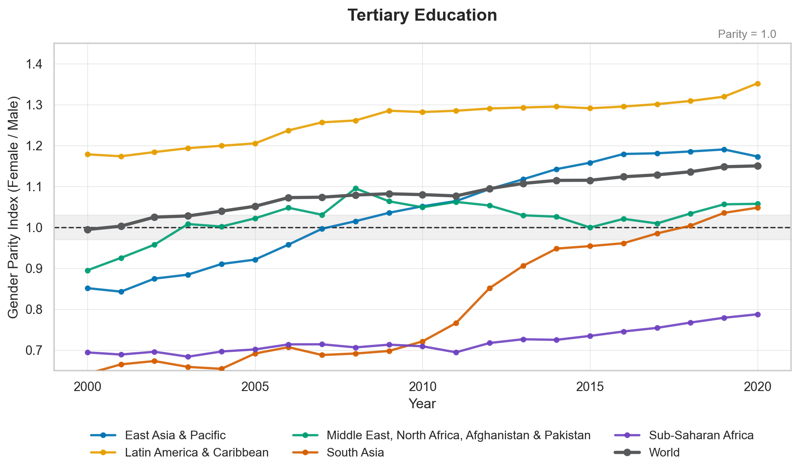

| series | mean_rate | min_rate | max_rate | |
|---|---|---|---|---|
| 0 | primary | 101.106546 | 79.473808 | 118.426079 |
| 1 | primary_female | 99.523326 | 73.061752 | 125.894310 |
| 2 | primary_male | 102.625246 | 85.790840 | 117.201439 |
| 3 | secondary | 73.880423 | 25.435600 | 105.108917 |
| 4 | secondary_female | 72.962301 | 22.674450 | 104.589317 |
| 5 | secondary_male | 74.752978 | 28.168131 | 105.600121 |
| 6 | tertiary | 36.725496 | 4.384480 | 86.950279 |
| 7 | tertiary_female | 39.691699 | 3.595470 | 101.383179 |
| 8 | tertiary_male | 33.892155 | 5.179770 | 74.362297 |
Two Decades of Educational Change: Global Enrollment Trends and Gender Gap Reduction, 2000–2020
1 Introduction
The overarching goal of this project is to evaluate global progress in equitable access to education from 2000 to 2020. We focus on whether less-developed regions have been catching up to the world average in school enrollment and whether gender disparities in these regions have narrowed over time.
By combining regional and gender-disaggregated enrollment data, we assess whether international development efforts have contributed to convergence in both educational attainment and gender parity.
- add main findings *
2 Data Description & Cleaning
This project uses school enrollment data from the World Bank World Development Indicators (WDI) database. The dataset includes gross enrollment ratios for three education levels—primary, secondary, and tertiary—, total and by gender. The indicators are:
- Primary Education
- Total:
SE.PRM.ENRR - Male:
SE.PRM.ENRR.MA - Female:
SE.PRM.ENRR.FE
- Total:
- Secondary Education
- Total:
SE.SEC.ENRR - Male:
SE.SEC.ENRR.MA - Female:
SE.SEC.ENRR.FE
- Total:
- Tertiary Education
- Total:
SE.TER.ENRR - Male:
SE.TER.ENRR.MA - Female:
SE.TER.ENRR.FE
- Total:
Data were collected for all available countries over the period 2000–2020 using the wb.data.DataFrame() function. The raw dataset was saved as data/wdi_edu.csv.
Here are our preprocessing steps before analysis:
2.1 Removal of Missing Values
Rows with incomplete observations across any of the enrollment indicators were removed to ensure consistent time-series data. The resulting cleaned dataset (df_clean) contains only complete country-year records for all twenty years.
2.2 Standardizing Indicator Labels
A mapping dictionary was applied to replace WDI indicator codes with more descriptive names such as:
"SE.PRM.ENRR"→"primary""SE.PRM.ENRR.FE"→"primary_female""SE.SEC.ENRR.MA"→"secondary_male""SE.TER.ENRR"→"tertiary"
2.3 Filtering to Target Regions
We filtered our data down to keep only the major global regions:
- Sub-Saharan Africa
- South Asia
- Middle East, North Africa, Afghanistan & Pakistan
- Latin America & Caribbean
- East Asia & Pacific
- Europe & Central Asia
- North America
- World
2.4 Converting to Long Format
The cleaned regional dataset was reshaped from wide to long form:
- Year columns (e.g.,
"YR2000") were turned into a singleyearvariable. "YR"prefixes were removed and values were converted to integers.- Data were sorted by
Country,series, andyear.
2.5 Exporting Final Dataset
The final long-format dataset used for analysis was saved as data/wdi_edu_filtered_long.csv.
Here is summary statistics for the variables we have across all regions from 2000-2020:
3 Data Analysis
3.1 Growth in Each Education Level by Region
This table reports the average annual growth in primary, secondary, and tertiary school enrollment rates for each world region between 2000 and 2020. Growth rates are calculated as the year-to-year change in enrollment values, and then averaged over the 20-year period to capture longer-term regional trends. Positive values indicate that enrollment has generally increased over time, while negative values reflect declining or stagnant progress. Comparing growth across regions and education levels highlights where expansion in access to schooling has been fastest and where progress has been more limited.
| region | primary_growth | secondary_growth | tertiary_growth | |
|---|---|---|---|---|
| 0 | East Asia & Pacific | -0.508122 | 1.387767 | 1.804751 |
| 1 | Europe & Central Asia | -0.166644 | 0.397700 | 1.491138 |
| 2 | Latin America & Caribbean | -0.489661 | 0.886855 | 1.552549 |
| 3 | Middle East, North Africa, Afghanistan & Pakistan | 0.528657 | 0.525619 | 0.737428 |
| 4 | North America | -0.031169 | 0.326427 | 0.971567 |
| 5 | South Asia | 0.233246 | 1.474988 | 0.949892 |
| 6 | Sub-Saharan Africa | 0.921688 | 0.963458 | 0.240672 |
| 7 | World | 0.025631 | 0.851748 | 1.011157 |
Sub-Saharan Africa shows the fastest increase in primary enrollment, with an average annual rise of 0.92 percentage points. This suggests steady and sustained improvement in access to primary education across the region. Sub-Saharan Africa also experienced similar gains in secondary enrollment, although East Asia & Pacific and South Asia outpaced all regions with even higher average yearly increases of 1.39 and 1.47, respectively. For tertiary education, East Asia & Pacific, Latin America & Caribbean, and the global average all exceeded 1 percentage point of growth per year, indicating particularly rapid expansion in higher education access in these regions. Taken together, these trends highlight that while basic education has been improving globally, while Sub-Saharan Africa has prioritized building strong progress at the primary level as a critical foundation for long-term educational development.
3.2 Enrollment Trends over Time 2000-2020
intro



analysis
3.3 Regional Convergence
To assess how each region compare to the global education level, we examine the convergence in primary, secondary, and tertiary school enrollment. For 2000 and 2020, we caculated each region’s gap from the world average and measured convergence as the reduction in the absolute distance to the global mean. A positive convergence score indicates the region is moving closer to the world enrollment level while a negative score indicates divergence.
Importantly, these convergence scores should be interpreted alongside previous line graphs. A negative score does not necessarily imply worsening outcomes as divergence may occur because a region’s enrollment rate is rising faster than the world average and surpassing it, not only because it is falling behind. Thus, evaluating both the direction of the gap and the trajectory of enrollment levels is essential for understanding the nature of convergence or divergence.
The bar plots summarize how five major world regions (East Asia & Pacific, Latin America & Caribbean, Middle East & North Africa, South Asoa, and Sub-Saharan Africa) progress across education levels. This helps reveal not only which regions are closing historical enrollment gaps but also where disparities have persisted or widened over the past two decades.



analysis
3.4 Gender Parity in Educational Participation
In this section, we assess the evolution of female–male enrollment disparities across five major world regions with historically lower baseline access to education: East Asia & Pacific, Latin America & Caribbean, Middle East & North Africa (including Afghanistan and Pakistan), South Asia, and Sub-Saharan Africa. The global average is incorporated as a benchmark to contextualize regional progress. Gender disparities are quantified through the Gender Parity Index (GPI), calculated as female enrollment divided by male enrollment using World Bank WDI statistics. A value of 1.0 represents gender parity, while values below or above 1.0 indicate male- or female-favored enrollment gaps, respectively. The analysis focuses on three educational stages (primary, secondary, and tertiary) over the period 2000 to 2020.

3.4.0.1 Primary Education
As shown in Figure 1, primary-level GPI trends reveal substantial convergence toward gender parity across all regions. By 2020, nearly all regions are positioned within the internationally recognized near-parity threshold (0.97–1.03), including the global average, indicating that gender inequality at the point of entry into schooling has been largely eliminated. Latin America & the Caribbean demonstrates a consistently slight female advantage throughout the two decades. East Asia & Pacific and the world average achieved parity by the mid-2000s and maintained it thereafter. Although starting from a relatively disadvantaged position in 2000, South Asia and Sub-Saharan Africa exhibit steady and continuous improvement, closing the enrollment gap substantially by 2020. These patterns suggest that global education initiatives targeting universal primary school access have been effective in reducing structural gender exclusion in early schooling.

3.4.0.2 Secondary Education
Figure 2 shows that while progress is evident at the secondary level, regional disparities remain more persistent than at the primary level. The world average and East Asia & Pacific reached parity by approximately 2010, indicating successful transition for girls into lower-secondary education in these contexts. In contrast, South Asia and Sub-Saharan Africa continue to fall slightly below parity by the end of the time period (approximately 0.94–0.95), despite gradual improvement. The Middle East, North Africa, Afghanistan & Pakistan grouping demonstrates slower convergence toward parity, reflecting continued gendered constraints during adolescence. Latin America & the Caribbean sustains a female-favored balance throughout the period, suggesting comparatively stronger retention of girls beyond primary schooling. These patterns underscore the importance of the primary-to-secondary transition as a critical juncture at which gendered barriers intensify.

3.4.0.3 Tertiary Education
At the tertiary level, gender disparities become more pronounced and regionally divergent, as shown in Figure 3. The world average surpasses parity around 2010, reflecting the global expansion of women’s participation in higher education. Latin America & the Caribbean experiences the strongest female advantage, exceeding a GPI of 1.30 by 2020, while East Asia & Pacific and South Asia also cross parity after the mid-2010s, indicating accelerating gains in women’s university enrollment. In stark contrast, Sub-Saharan Africa remains significantly below parity throughout the period, with GPI values generally under 0.90 and only modest improvements toward the end of the decade. These persistent regional inequalities highlight the combined influence of financial pressures, limited tertiary infrastructure, and lower female completion rates at earlier levels, which collectively constrain women’s access to higher education in Sub-Saharan Africa.